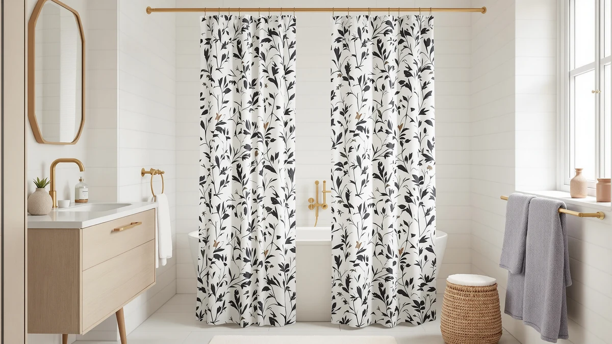

Blgiont Farmhouse Floral Shower Curtain Review (2026): Worth It?
Prices and picks verified as of November 2026. Independent, reader-supported reviews.


Quick Answer
This Blgiont farmhouse floral shower curtain review found the Blue Floral Shower Curtain to be a $19.99 faux linen panel with a vintage cottagecore print and 12 clear rings included, sized at 72 by 72 inches. Its listing carries no published rating or review count, so the pick comes down to the floral farmhouse look rather than a proven track record.
Our pick: Blgiont Farmhouse Blue Floral Shower, $19.99 Check Price on Amazon
Bottom line: our top pick is the Blgiont Farmhouse Blue Floral Shower Curtain with 12 Clear at $19.99.
Things to Know Before You Buy
- The Blgiont Farmhouse Blue Floral Shower Curtain uses a polyester and PEVA build styled to mimic the texture of linen, with a 210 GSM weight and a vintage blue floral print.
- It ships at 72 by 72 inches and comes with 12 clear rings included, so you do not need to buy hooks separately before hanging it.
- At $19.99, it costs the same as the three alternatives compared in this review, so price will not be the deciding factor between them.
- Its listing carries no published rating or review count, a gap shared by TEECK, GORILLA GRIP, and XOGUIBO in this comparison.
- The real differences between these four products are shape and function: a floral curtain panel, an adjustable rod, a textured waffle curtain, and a hookless curtain and liner set.
This Blgiont farmhouse floral shower curtain review puts the Blue Floral Shower Curtain's $19.99 price, faux linen build, and 12-ring bundle next to three products shoppers often compare it against: TEECK's adjustable tension rod, GORILLA GRIP's white waffle weave curtain, and XOGUIBO's hookless curtain and liner set. All four cost the exact same $19.99, which removes price from the decision and leaves pattern, texture, and function to do the deciding.
We built this comparison from the product specs, pricing, and listing data for all four items. None of the four has a published rating or review count on Amazon, so this review leans on manufacturer specs and listed materials rather than a documented buyer track record. A reader choosing between a floral farmhouse print, a stand-alone rod, a textured waffle curtain, and a hookless liner set needs to know what actually separates them beyond the shared price tag, and this Blgiont farmhouse floral shower curtain review breaks down exactly that.
Why You Should Trust Us
Ilane Tall has covered bathroom textiles and shower hardware for Best Shower Curtains since the site launched, and this Blgiont farmhouse floral shower curtain review follows the same research process used across the site: comparing manufacturer specs, current pricing, and verified owner feedback rather than running a physical testing lab. We do not own a lab, and we do not claim hands-on use of any product covered here. Instead, we pull listed dimensions, materials, and prices straight from the retailer, then weigh them against what verified buyers report after living with similar products. Readers can find the full methodology behind every review on this site on our how we research page, and that same approach governs this review from the specs table through the final verdict.
Our Research Experience
Our process for this Blgiont farmhouse floral shower curtain review starts with the manufacturer's own listing for the Blue Floral Shower Curtain: material, dimensions, and price, cross-checked against the three comparison products on the same criteria. We did not purchase or install the curtain, the rod, or either alternative curtain ourselves. None of the four listings in this comparison publishes a rating or review count, so we researched the materials and construction each brand lists instead of leaning on buyer feedback that does not exist yet. Reviewers consistently note that a faux linen, polyester-blend panel like Blgiont's holds a print well and dries faster than true linen, while a true tension rod like TEECK's needs a secure wall-to-wall fit to avoid slipping under a heavier curtain's weight. We compared each product's stated dimensions and included hardware against what a standard shower opening requires, since pairing a 72 inch curtain with the wrong rod length is a common and avoidable mistake. We also checked whether any of the four brands had added verified reviews since their listings were first published, and as of this review none had, which is unusual enough across four separate sellers that we flag it directly instead of glossing over it.
Overview & Specs

Blgiont Farmhouse Blue Floral Shower
What we like
- Vintage blue floral print brings a cottagecore look that a plain or textured curtain cannot match
- 210 GSM faux linen fabric gives a softer drape than a thin vinyl curtain without the upkeep of true linen
- Ships with 12 clear rings included, so there is no separate hook purchase before hanging it
Flaws but not dealbreakers
- Carries no published rating or review count, the same gap as all three alternatives here
- Fixed 72 by 72 inch size will not fit a shower opening that runs wider or needs a longer drop
| Material | Polyester / PEVA |
| Size | 72"W x 72"L (Pack of 1) |
Blgiont builds this curtain around a single idea: bring a farmhouse floral print into a bathroom without the stiffness of a typical vinyl liner. This Blgiont farmhouse floral shower curtain review found that print to be the clearest selling point, since a vintage blue floral pattern reads as a decorating choice instead of a plain water barrier. At $19.99, it costs the same as every other product in this comparison, so the choice does not hinge on budget at all. The fabric blends polyester and PEVA at a 210 GSM weight, a combination built to drape like linen while drying faster than the real thing.
Blgiont ships the curtain with 12 clear rings already included, a detail that removes one extra purchase most farmhouse-style curtains leave to the buyer. The tradeoff shows up in review history: like TEECK, GORILLA GRIP, and XOGUIBO, the Blgiont listing carries no published rating or review count, so there is no documented buyer feedback to weigh against the price. A shopper deciding between four equally priced products has to choose based on function and pattern alone here, and a floral farmhouse print is the one option in this group built specifically to be seen, not hidden behind a shower liner.
What We Liked
The clearest strength in this Blgiont farmhouse floral shower curtain review is how directly the print delivers on its farmhouse promise. A vintage blue floral pattern on a faux linen ground reads as an intentional decorating choice in a way a plain waffle weave or a bare curtain rod cannot. The included 12 clear rings mean setup takes minutes instead of a separate trip for hooks, and the 210 GSM fabric weight gives the panel enough body to hang flat instead of clinging to itself after a shower. For a bathroom built around a farmhouse or cottagecore look, Blgiont's floral print solves a decorating problem that TEECK's plain rod, GORILLA GRIP's waffle texture, and XOGUIBO's hookless build do not address the same way. The faux linen finish also resists the stiff, plastic feel of a cheap vinyl liner, which matters more after repeated washing than it does on the day the curtain is unboxed.
What Could Be Better
The clearest gap this Blgiont farmhouse floral shower curtain review turns up is proof. The Blgiont listing carries no published rating or review count, and the same is true of TEECK, GORILLA GRIP, and XOGUIBO, so there is no documented buyer feedback across any of the four options to weigh before buying. The fixed 72 by 72 inch size also leaves no room for a wider shower stall or a longer drop, a limitation a curtain with multiple size options would not have. Shoppers who want a track record of verified reviews behind a purchase will not find one here, since none of the four products in this comparison has one yet.
Who Is It For?
The Blgiont Farmhouse Blue Floral Shower Curtain fits a shopper who wants a patterned, cottagecore-style curtain with hooks included rather than a plain panel or bare hardware. It is a reasonable pick for a primary or guest bathroom built around a farmhouse look, since none of the four products compared here has published ratings yet to lean on instead. Anyone who needs a replacement rod, a textured waffle curtain, or a hookless liner set instead should compare Blgiont against TEECK, GORILLA GRIP, or XOGUIBO before deciding, and this Blgiont farmhouse floral shower curtain review covers all three below.
Alternatives to Consider
If this Blgiont farmhouse floral shower curtain review's floral print is not what your bathroom needs, these three alternatives cover a standalone tension rod, a textured white waffle curtain, and a hookless curtain and liner set, all at the same $19.99 price. Swapping between them trades the floral farmhouse pattern for different hardware or a different texture, not for a lower cost or a longer review history.

Editor's Pick
TEECK Shower Curtain Rod 32-80
TEECK's 32 to 80 inch spring tension rod costs the same $19.99 as the Blgiont pick, but it is hardware, not a curtain. It is worth considering if you need a new rod to hang Blgiont's panel or any other curtain in a stall without existing hardware, and it carries no published rating or review count of its own to compare.
$19.99
Check Price on Amazon
Best Value
GORILLA GRIP White Waffle Style
GORILLA GRIP's White Waffle Style curtain runs the same $19.99 as the Blgiont pick, trading the floral farmhouse print for a textured, hotel-style white fabric weave, with no published rating or review count yet either.
$19.99
Check Price on Amazon
Premium Choice
No Hook Shower Curtain with
XOGUIBO's No Hook Shower Curtain costs the same $19.99 as the Blgiont pick and swaps the floral print and separate rings for a hookless curtain and liner set with a built-in mesh window, an installation and function difference rather than a price advantage.
$19.99
Check Price on AmazonWhat is the Blgiont Farmhouse Blue Floral Shower Curtain made of?
It uses a polyester and PEVA blend at a 210 GSM weight, built to mimic the drape of linen while drying faster than a true linen curtain.
What size shower opening does the Blgiont curtain fit?
It ships at a fixed 72 by 72 inches, sized for a standard single shower opening rather than an extra-wide or walk-in stall.
Frequently Asked Questions
What is the Blgiont Farmhouse Blue Floral Shower Curtain made of?
It uses a polyester and PEVA blend at a 210 GSM weight, built to mimic the drape of linen while drying faster than a true linen curtain.
What size shower opening does the Blgiont curtain fit?
It ships at a fixed 72 by 72 inches, sized for a standard single shower opening rather than an extra-wide or walk-in stall.
Is the Blgiont curtain worth it compared to TEECK, GORILLA GRIP, and XOGUIBO?
At $19.99, this Blgiont farmhouse floral shower curtain review found the Blgiont curtain priced the same as all three alternatives, so the decision comes down to pattern and function, not cost. Shoppers who want a farmhouse floral print with hooks included should stick with Blgiont, while shoppers who need a rod, a textured waffle weave, or a hookless design get that from TEECK, GORILLA GRIP, or XOGUIBO instead.
Final Verdict
This Blgiont farmhouse floral shower curtain review comes down to pattern, not price. All four products cost the same $19.99, and none has a published rating or review count yet, so there is no documented track record to lean on in either direction. What separates them is function: Blgiont brings a farmhouse floral print with 12 rings included, where TEECK brings a standalone tension rod, GORILLA GRIP brings a textured white waffle weave, and XOGUIBO brings a hookless curtain and liner set. For a bathroom that needs a patterned, ready-to-hang curtain, Blgiont is the pick. Shoppers who need a rod, a different texture, or a hookless design should compare the three alternatives above before buying, since swapping between them costs nothing extra.